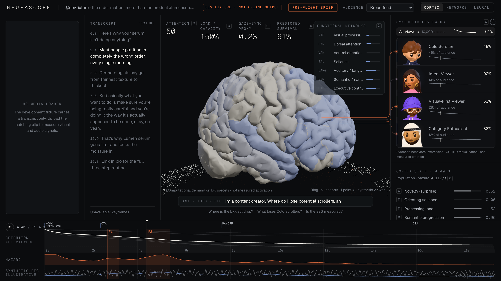
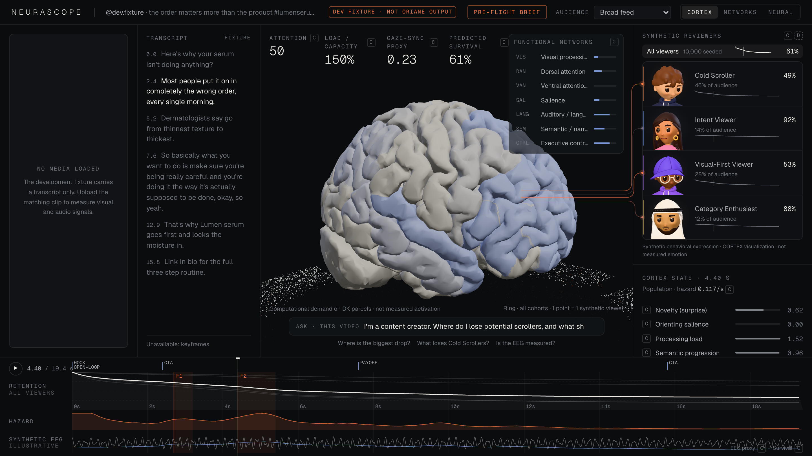
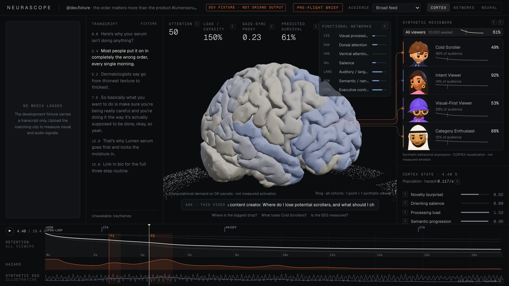
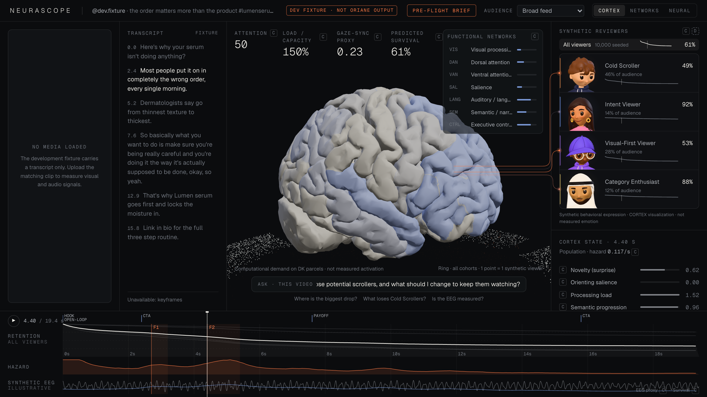
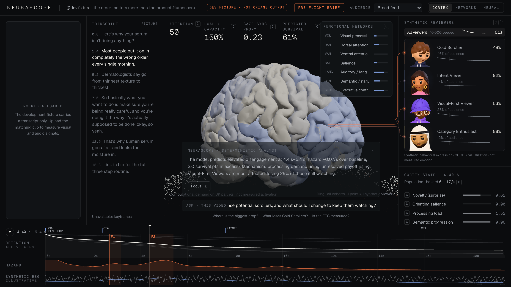
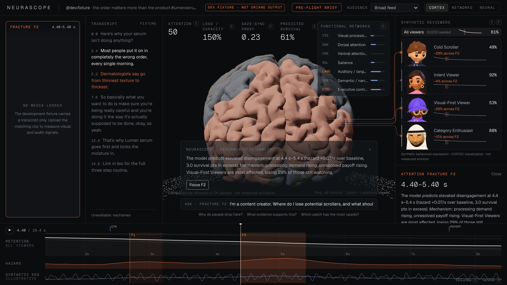
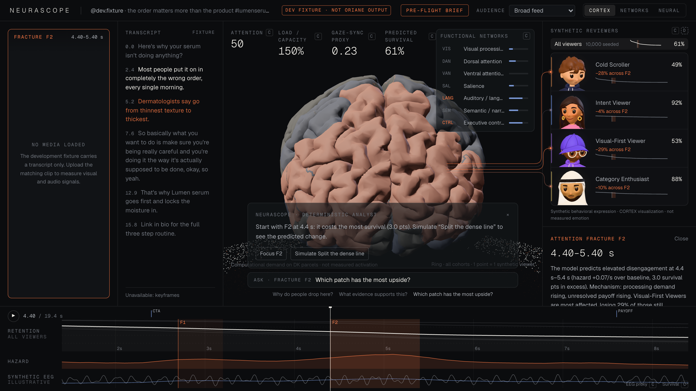
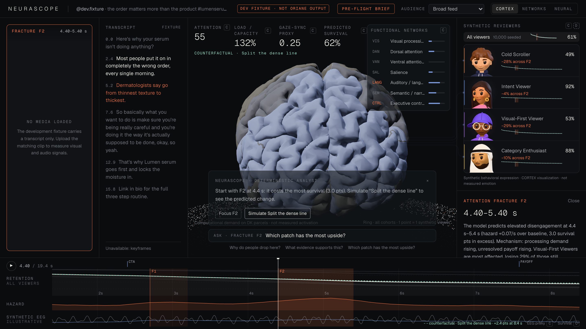
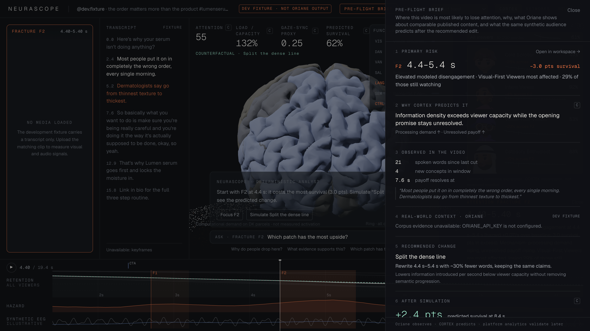
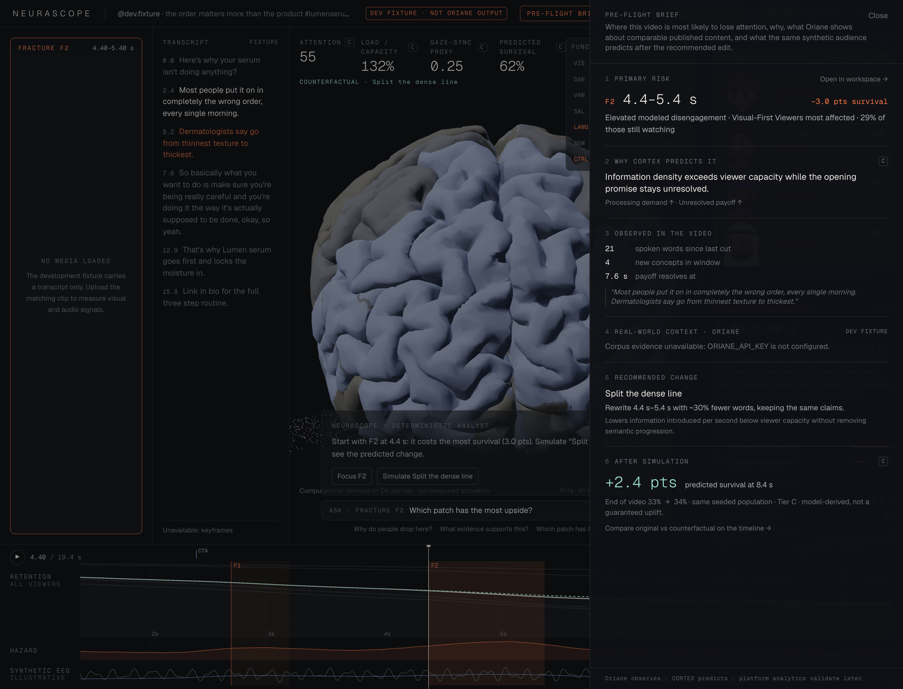

Ask the lab where you lose them.
CORTEX · 10,000 seeded viewers
Retention · hazard · synthetic EEG · four behavioral cohorts






F2 · 4.40–5.40 s · −3.0 pts
Visual-First Viewers −29% · Cold Scrollers −28% across F2


Split the dense line · +2.4 pts
Rewrite 4.4 s–5.4 s with ~30% fewer words, keeping the same claims.


+2.4 pts predicted survival
Primary risk → why → observed → recommended change → after simulation
Ask the lab before you publish.